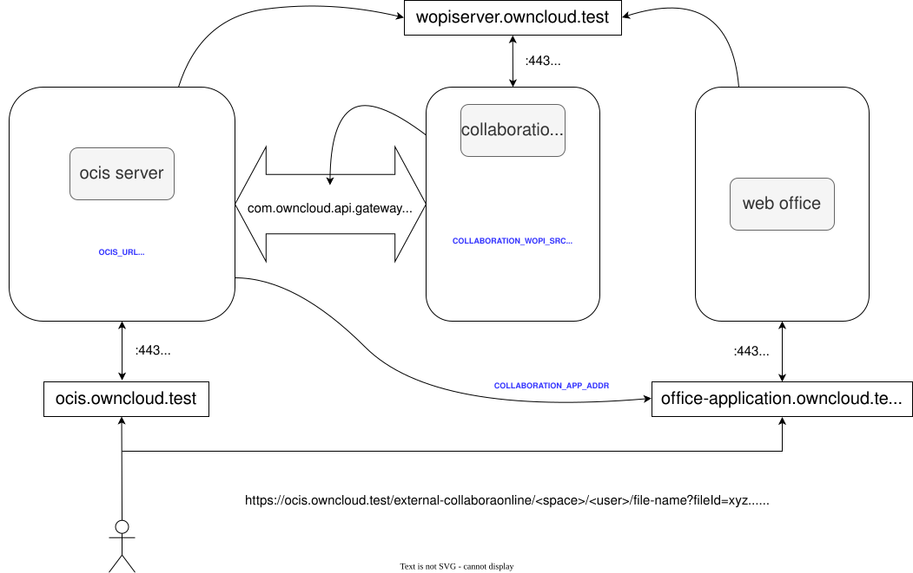

Office Applications Using WOPI
Introduction
Infinite Scale uses the WOPI protocol to integrate office applications. This document describes the general flow and basic settings used. For more details on possible configuration values see the Office Integration document at the configuration examples. More information about the WOPI protocol can be found on Wikipedia or Microsoft.
For the time being, the supported office applications are:
-
Collabora
-
OnlyOffice
-
Microsoft Office
General Information
Infinite Scale can be configured to use web office applications via a browser in an iframe using the WOPI protocol. Among other things and depending on the use case, administrators can:
-
provide multiple applications from different vendors in parallel,
-
define which icons are used for which applications,
-
define which app is preferred to open a file.
Configured applications can be selected by users when opening a document via the web UI. The list of available applications to open a file shows an icon and the app name for each entry.
Web office applications are:
-
Provided
Via the Collaboration service because they are not able to register themselves. -
Configured
For use with the web UI via the App-Registry Service.
Here, default web office apps and their appearance in the list of available apps in the web UI are defined.
For details configuring the collaboration service and the app-registry.yaml file, see the WOPI Configuration Examples section below.
- Special note on Microsoft Office
Microsoft distinguishes between two approaches running a web office application farm where you either need an:
-
Office Online Server locally installed, or
-
active Microsoft 365 subscription including the data provided by ownCloud, see Procedure using Microsoft 365.
Procedure using Microsoft 365
Apart from licensing, when using Microsoft 365, the following procedure applies, contact ownCloud Support for more details:
-
Customers provide ownCloud with:
-
a written statement about their Microsoft 365 entitlement.
-
the URL of their ownCloud instance. Only users coming from this URL will be able to use Microsoft 365.
-
-
ownCloud provides customers with a required proxy URL to be used in the settings, see below.
-
Among other things, the proxy checks if users originate from the given ownCloud Instance URL.
-
-
When users open an office document via the ownCloud instance and Office 365 for the web is loaded, Microsoft checks if these users are already signed in via a Microsoft 365 business account. If users are not yet signed in, they will be prompted to sign in.
WOPI Overview
The image below shows the WOPI integration in an overview to get a better understanding of which general components are involved and which basic settings need to be set. It also shows where parts of an URL are defined, how an URL is assembled, and which component is using which part of the URL. Note that only a few configuration options are shown in the image to get the relationships right.

WOPI Configuration Examples
-
See below for an example WOPI configuration using Docker Compose, to get a first impression of how a WOPI configuration can be achieved. Both, ocis environment variables and ocis service configuration yaml files are used. See the Office Integration document for an in depth explanation.
Using git branch name:
stable-7.3, to point to the latest stable version that also includes patches -
See the Local Production Setup guide for details how to install and configure it.